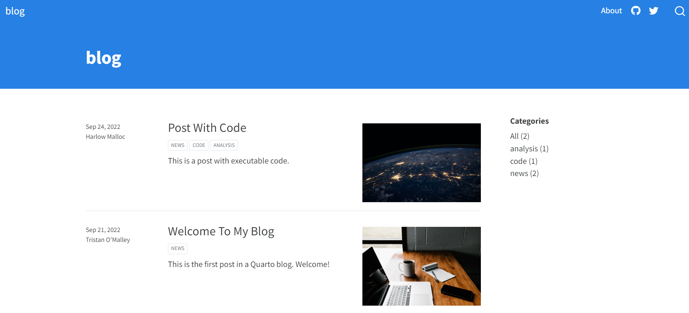
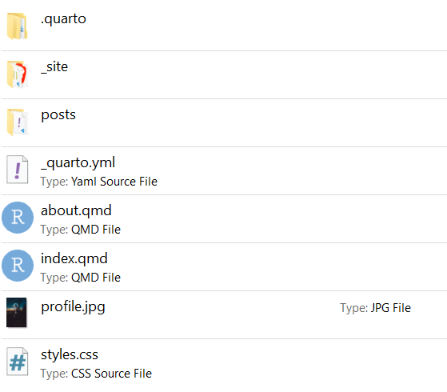
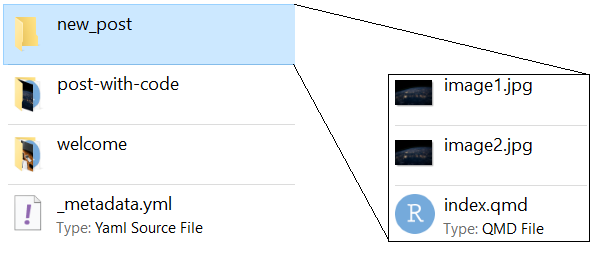
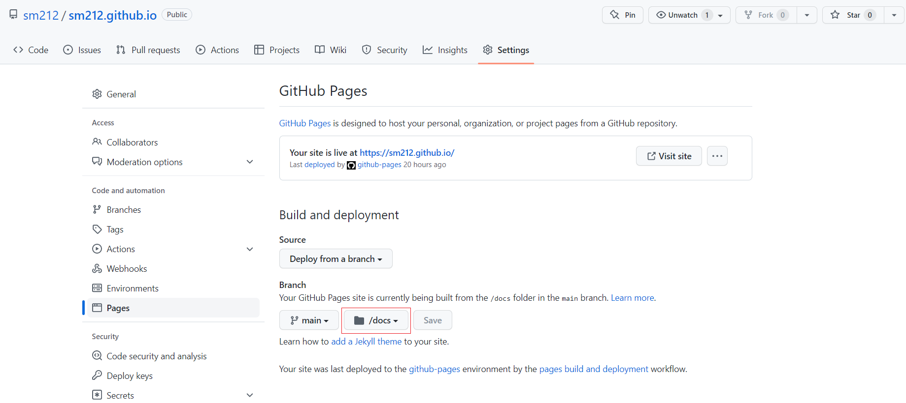

quarto create-project <blog name> --type website:blogQuarto is the next version of rmarkdown. It’s fairly new, the aim is for quarto to be able to do everything rmarkdown can do and to be cross platform (so R & python can use it). It’s made by the people at RStudio / Posit so it’s going to be around for a while and is probably worth getting used to! If you’ve used rmarkdown before, you already know quarto, the main difference is the file extensions are now .qmd instead of .rmd. Quarto has all the same output formats as rmarkdown - static / interactive documents, word docs, pdfs, slides, books, websites, blogs and so on.
I recently spent an afternoon moving an old blogdown blog over to quarto. Quarto is much easier to use, though I did run into a couple of very small issues when setting everything up. This post will cover the entire start to finish process of making a blog & getting it onto the internet. All you need is a github account (and a little bit of familiarity with git). Let’s jump in!
Initial setup
First things first, head over to the getting started page and download quarto. Quarto is a command line tool, so you’re going to be using the terminal (or powershell if you’re on windows). Once quarto is downloaded, install it with all the default settings and open up a new terminal window. The next few steps are just following the instructions over on the Creating a Blog page. All you need to do is type
Where <blog name> is whatever you want to name your blog. This will make a folder called <blog name>. Congratulations - you just made a blog! To see the blog, just ask quarto to preview it for you:
quarto preview <blog name> There’s a home page with a list of blogposts, an ‘About’ section in the top right, and links to things like github and twitter. Now that you’ve got a blog, it’s time to start tweaking it to look how you want it to look.
Folder structure
Here’s what the <blog name> folder looks like. There’s a consistent structure to the folder which makes it easy to use:

There’s 2 file types:
.qmd- these are the pages & blogposts shown on the blog.index.qmdcontains the code used to generate the home page, andabout.qmdcontains the code used to generate the about page. There’s a folder calledpostswhich is where the individual blogposts live - we’ll come back to that later.yml- these contain options about the pages. They affect the folder they’re in & any subfolders - we’ll come back to this later as well
If you go into the posts folder, there’s a _metadata.yml file and 2 folders - one for each blogpost.
Making new posts, editing pages
Let’s look at the _metadata.yml file:
# options specified here will apply to all posts in this folder
# freeze computational output
# (see https://quarto.org/docs/projects/code-execution.html#freeze)
freeze: true
# Enable banner style title blocks
title-block-banner: trueSince this is in the posts folder, it will affect every blogpost. There’s not a huge amount in here by default, but there’s a lot of options if you want to customise it. One particularly cool option is the freeze: true line - if it’s set to true (the default) then quarto won’t rerun any .qmd files when building the site. This is very handy if you have any code in your blogposts which take a while to run. The options are freeze: true, freeze: false which would rerun every .qmd file every time you build the site, and freeze: auto which will only rerun .qmd files which have changed since the last time the site was built.
Now on to the posts. Each post needs to have its own folder inside the posts folder. The name of the folder becomes part of the blogpost URL, so make it something short! Inside the folder there always needs to be a file called index.qmd. This is where you’ll write the blogpost. Quarto will look for these index.qmd files when building the site, so it’s important that the name & location of these files is correct. If you have any pictures you want to include in the post, put them in the folder as well.
Lets make a new post. I’ve made a new folder with a empty index.qmd file, and put in 2 pictures I want to include in the post:

Now all we need to do is add some content to index.qmd. Every .qmd starts with a header, which contains things like the blog title, the author, when the blog was written and so on. Below that is the content of the blog. Here’s what index.qmd looks like after making some edits:
---
title: "A new blogpost"
subtitle: "A short summary, shown below the blog title on the homepage"
image: "image2.png"
author: "Sean Maguire"
date: "2022-09-24"
categories: [code, blog, quarto]
---
This is an intro paragraph.
Adding pictures requires a slightly weird line of code:

And another picture
The header is the lines between ---. Most of it’s fairly self explanatory. The 2 ones to mention are image, which determines the picture shown next to the blog on the home page, and categories which are a list of (optional) tags to file the post under.
Customising the blog
Home page
The home page is just like any other blogpost - it has its own index.qmd in the main folder. Here’s how it looks by default:
---
title: "blog"
listing:
contents: posts
sort: "date desc"
type: default
categories: true
sort-ui: false
filter-ui: false
page-layout: full
title-block-banner: true
---It’s just a header. Quarto builds the rest of the homepage when it builds the site, so you never need to add any content to this file by hand. You might want to change the title to something more imaginative though. The listing section tells quarto how to display the list of blogposts, by default it will show the posts in descending date order, and each post will have the title, an image, the author, the date created, a (optional) subtitle, and a short preview of the first few lines of text from the post. You can edit how this looks by making changes to the entries below listing: - make sure that you use the same level of indentation otherwise quarto will complain! The full list of listing display options are here if you want to play around with them.
About page
The about page is, just like pretty much everything else on the blog, a .qmd file. The default about.qmd is quite minimal:
---
title: "About"
image: profile.jpg
about:
template: jolla
links:
- icon: twitter
text: Twitter
href: https://twitter.com
- icon: linkedin
text: LinkedIn
href: https://linkedin.com
- icon: github
text: Github
href: https://github.com
---
About this blogThis looks very familiar - there’s the usual header where you specify the title and image, then there’s the body below where you’d write the content. One new thing to mention, this page is using a template. Templates tell quarto to display the page differently. So the about page won’t look like a usual blog post and it won’t look like the home page. By default the template includes links to things like twitter and github, but you can delete those if you want.
Themes and titles
Now the only things left to customise are things like the blog colours, fonts, titles and so on. These are all site wide options so are found in _quarto.yml, which looks like this:
project:
type: website
website:
title: "blog"
navbar:
right:
- about.qmd
- icon: github
href: https://github.com/
- icon: twitter
href: https://twitter.com
format:
html:
theme: cosmo
css: styles.cssThe website title is the name shown in the tab, so you might want to change that to something specific to you. After that there’s a bunch of options about the navbar (the bar at the top of each page), by default the navbar will have 3 links on the right hand side - one to the about page, one to github, and one to twitter. Get rid of any you don’t want, and add any new ones you want to add in (following the exact same formatting & indentation).
Lastly there’s the theme. Quarto blogs come with 25 different themes. The default is cosmo, and changing the theme is extremely easy - just change the theme: cosmo line to whichever theme you want to use. If you know CSS, there’s the option to further customise the theme by adding to the styles.css file.
Publishing to github pages
At this point you’ve made a blog, made a blogpost, and customised the blog to look exactly how you want. Congratulations! The final step is to get your blog out into the world. The easiest way to do this is using github pages.
The first thing to do is to make a new github repo to store the blog files. Head over to github and make a new repo, it needs to have a specific name - <your github username>.github.io - and it needs to be public. Now we just need to get some files into this repo and we’re done.
Lets get those files added. You need to tell quarto to render the site into a docs folder. This is a site wide change, so open _quarto.ylm and change the project: section to
project:
type: website
output-dir: docsNow when you render the site, quarto will put all the files into docs. Open up a terminal in your blog folder and type
quarto renderThis will render all the posts in posts, build the site, and write the output to the docs folder (it’ll make a new folder if this is the first time quarto render has been run). Next we need to make a git repo, tell it to upload files to the github repo we just made, and then push all the files in docs. Go to the terminal again and type:
git init
git add docs/
git commit -m "initial commit"All our files are committed and ready to be pushed, we just need to tell git where to push them to - add the github repo you just made and push!
git remote add origin <url of github repo>
git branch -M main
git push -u origin mainThe final step is to tell github pages to build the site from the docs folder you just uploaded. Go to your <your github username>.github.io repo on github and go on Settings > Pages. Change the Branch section to build the site from the docs folder and you’re done. Your blog is now live! Head over to <your github username>.github.io to see it in all its glory

Updating your blog
If you make any new posts or changes to your site, you’ll need to push those changes to github before they update on the site. The process you need to follow to update the blog is:
- Once you’ve made changes, preview how the site looks using
quarto preview - If you’re happy with how everything looks, render the site to the
docsfolder usingquarto render - Add the changes you just made to
docsto git usinggit add docs/ - Commit these changes ready for upload using
git commit -m <short message> - Push the updates to github using
git push
That’s it!